活动现场拍摄与航拍
手机 / 相机 / 大疆实拍与高空航拍，保障影像素材质量
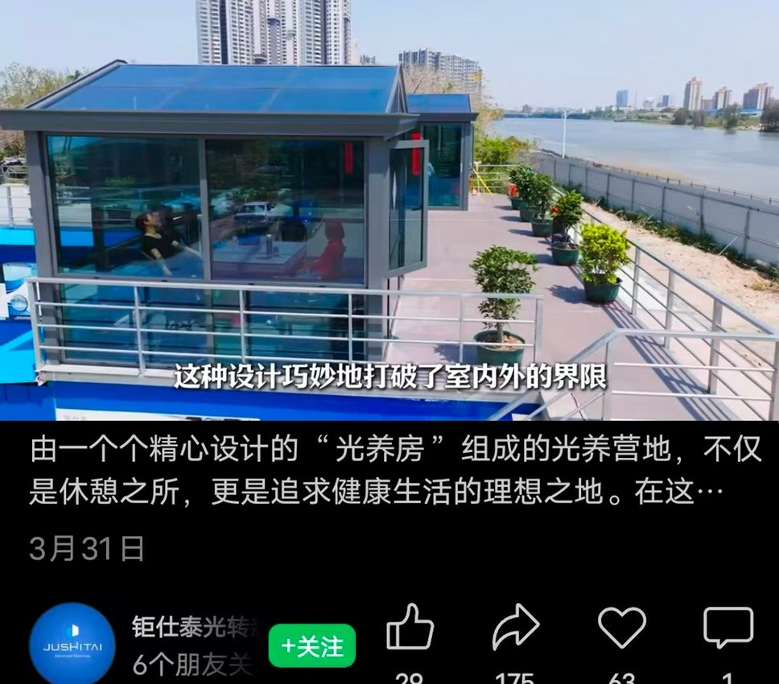
活动现场拍摄
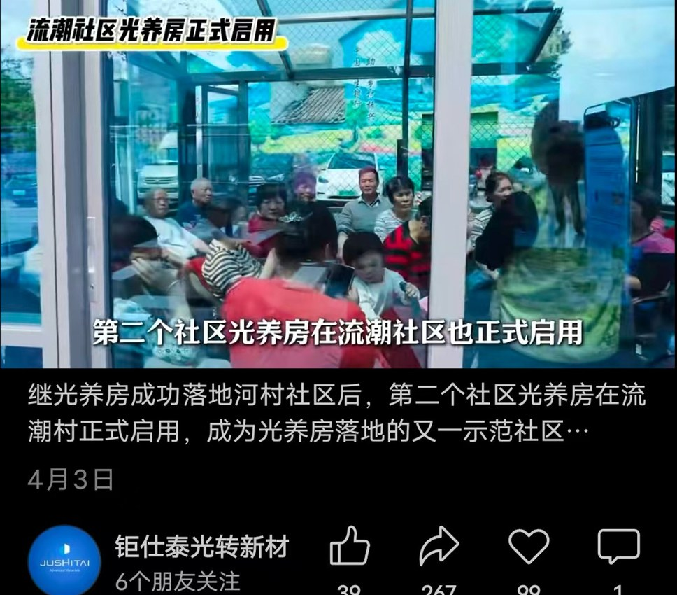
航拍
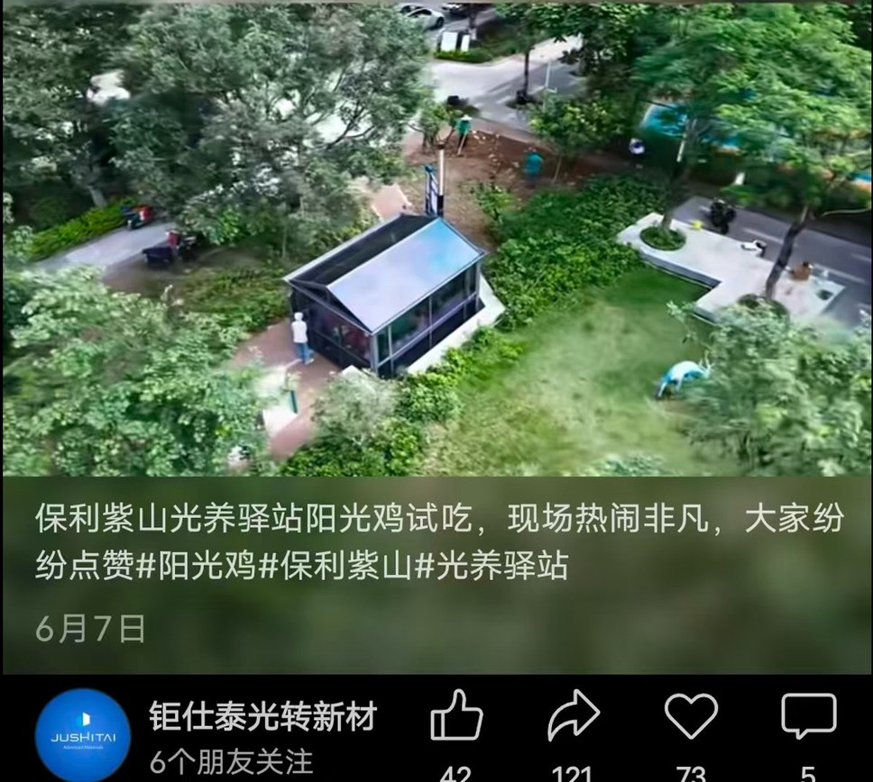
活动现场拍摄
星纪元智驾测试剪辑
达芬奇粗剪调色 + 剪映后期包装，贴合甲方要求
产品宣传片（领航象 AI 生涯探索系统 / 静音探索舱）
产品 A
产品 B
校园活动混剪（华南师大附中剪彩 / 生涯游园会等）
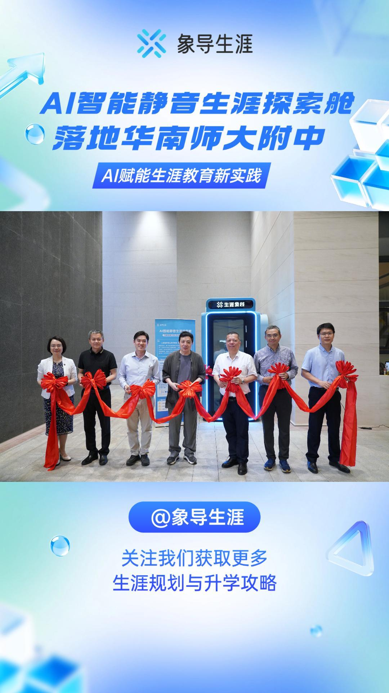
活动实录
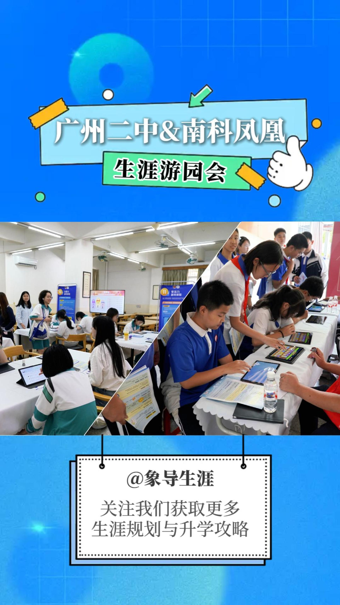
氛围还原
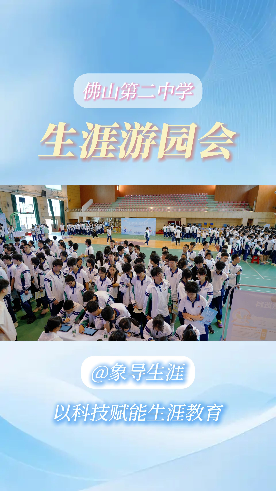
宣传短视频
多人物采访 · 视频剪辑
独立完成体验者采访素材的规整、归类与核心共性梳理，按内容分类精准混剪；达芬奇粗剪与专业调色，剪映完成后期包装。
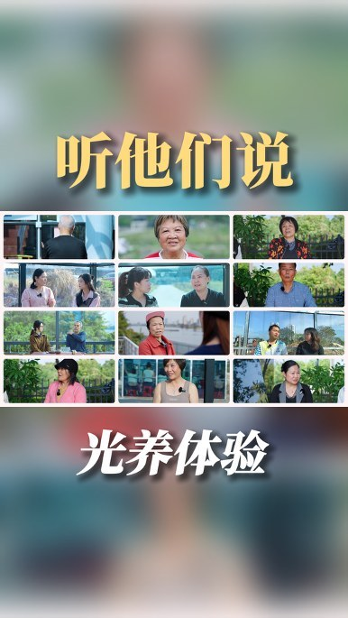
混剪封面
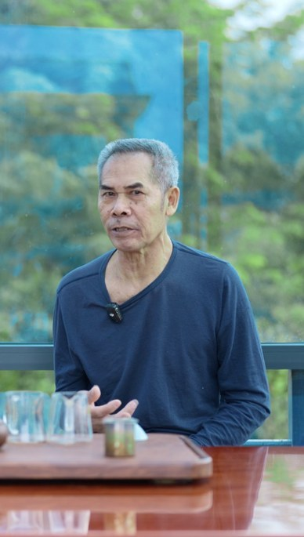
采访成片
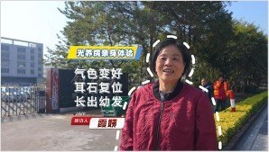
被访人出镜
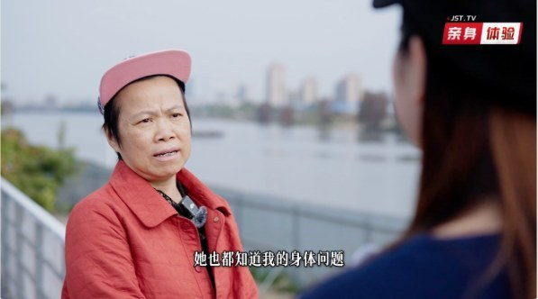
采访画面
皮革产品 · 口播剪辑
对接甲方沟通需求，协同完成前期拍摄，严格按脚本与实拍素材开展剪辑、调色及后期包装，作品质量获甲方认可。
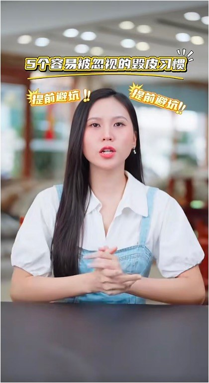
口播成片
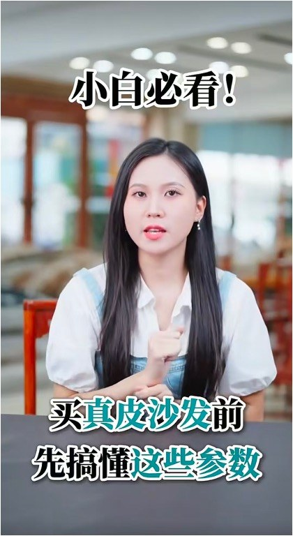
口播成片
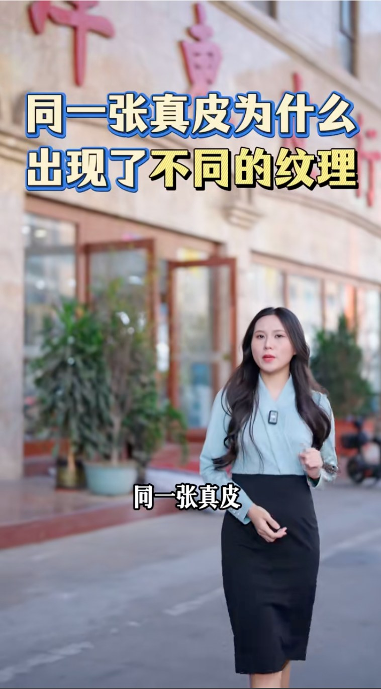
口播成片
知识科普 · 口播剪辑
围绕职场趋势与升学规划等大众关心的话题，独立完成选题策划、脚本撰写与剪辑包装，以通俗表达传递专业观点。
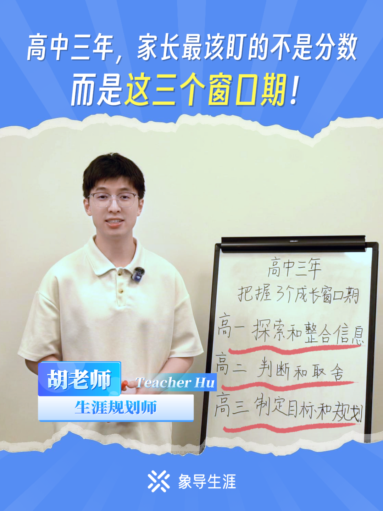
科普口播成片
科普口播成片